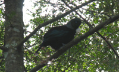
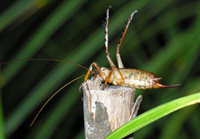

Fernglen Native Fauna
- Fernglen is also home to a large variety of native fauna
Fernglen is home to native birds, insects, reptiles, glow worms and fresh water fish.
Birds commonly found at Fernglen

Tui
- Tui
- Piwakawaka or fantail
- Kereru or wood pigeon
- Riroriro or grey warbler
- Ruru or morepork
- Pipiwharauroa or shining cuckoo
- Tauhou or silvereye
- Kotare or kingfisher
- Isolated sightings of Kaka or bush parrot
Other native fauna
- Weta
- Skinks
- Gecko
- Glow worms
- Fresh water crayfish
- Fresh water whitebait

Weta